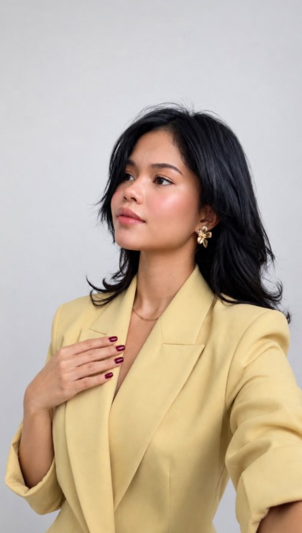
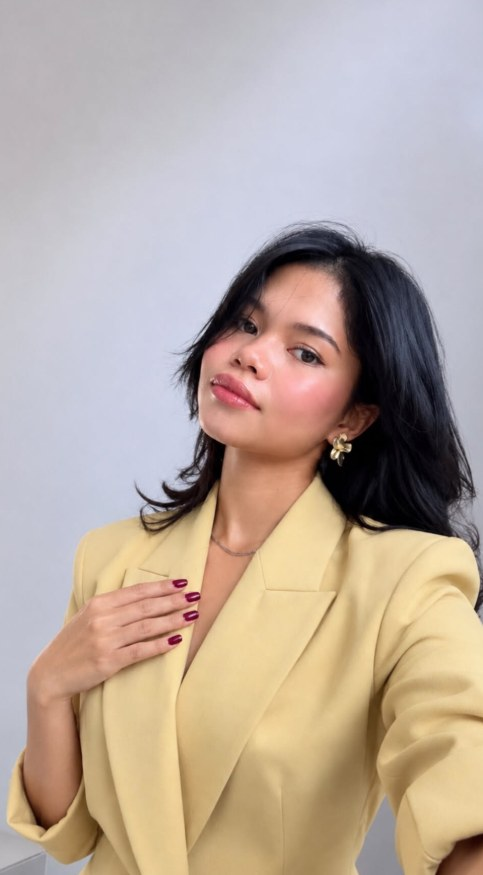

Founder portfolio
Norine
Kim Dowing
Your time | finance | leverage management and literacy partner you need!
I help you decide what is worth building online, then build it.
I started as a virtual assistant and now run NKD Digital Solutions PH. Four-plus years of working with clients around the world taught me one thing: the businesses that win online are not the ones that publish the most. They are the ones that decide best.
I am passionate about helping business owners, and about helping young Filipina women and women around the world build skills in this industry.

NKD Digital Solutions
01 / Background
Education and experience

Education
- BA Mass Communication, major in Journalism2023
- Humanities and Social Sciences2018
Work and career experience
- Founder and CEO, NKD Digital SolutionsPresent
- SEO specialist and writer2023 to 2025
- Executive assistant and virtual assistant2022
02 / Mission and vision
Easier to find. Easier to understand. Easier to choose.
My mission
To help businesses build a stronger digital presence, and to educate on finance flow, leverage, investment literacy and website traffic, through strategic SEO, meaningful content and thoughtful website optimization.
My mission is to turn ideas into digital experiences that are easier to find, easier to understand, and more valuable to the people they are meant to reach. I combine strategy, creativity, technology and continuous learning to create digital work that supports real business growth, not just visibility for the sake of visibility.
My vision
To become a trusted digital growth professional known for connecting SEO, content, websites and modern technology in smarter and more meaningful ways.
I envision a digital world where businesses, especially growing and emerging brands, can build an online presence that is visible, credible, useful and built to grow. I will keep evolving with the digital landscape, embracing new technologies and AI while keeping human creativity, strategy and purpose at the center of the work.
03 / Skills
Five skills, one connected system
I bring together SEO, content, website optimization, research and digital marketing to help business owners and start-ups build a stronger, more discoverable online presence, and to educate start-ups on finance flow, leverage, investment literacy and website traffic. My strength is seeing how these areas connect: turning research into strategy, strategy into content, and content into optimized digital experiences.
- 01
SEO and search optimization
Keyword research, on-page SEO, metadata, search intent, internal linking, content optimization, and improving website visibility.
- 02
SEO content and copywriting
Creating and refining clear, useful, search-focused content for blogs, websites, landing pages, and digital platforms.
- 03
Website and CMS management
Managing and optimizing website content across WordPress, Shopify, Webflow, Wix, and other content management platforms.
- 04
Content strategy and research
Identifying relevant topics, researching audiences and search behavior, organizing content, and building practical content directions.
- 05
Digital marketing and growth support
Supporting businesses with content planning, online research, website presence, social media content, analytics, and day-to-day digital marketing execution.
04 / What I bring to the table
I work where search, content, websites and ideas meet
I do not see SEO, writing and website management as separate tasks. I connect them to create digital work that has a reason to exist, and a purpose beyond simply being published. AI can do each task on its own. My job is deciding how they fit together and which ones your business needs right now.
My working belief
Don't just make noise online. Make every digital asset earn its place.
05 / Certifications
Keeping my SEO knowledge current
Tools change fast, so I keep learning. These three Semrush Academy certificates cover SEO fundamentals, keyword research and the Semrush SEO toolkit.
06 / Clients
Recent & notable brands I have worked with
50+ client brands in total. A selection is shown here. Tap any logo to visit their site.
07 / Tools I use
Tools speed me up. They do not make the decisions.
Recommended learning
08 / Feedback
Feedback
Excellent and Fantastic Work Norine. You are a great addition to the team.

Let's work together
Have a project that needs to earn its place?
Tell me what you are building and what is not working. I will show you how I would think about it.